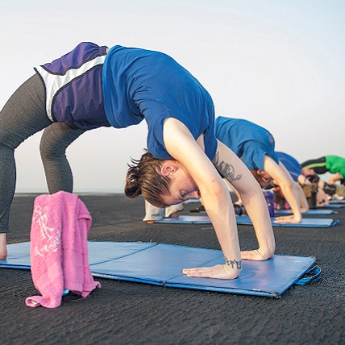
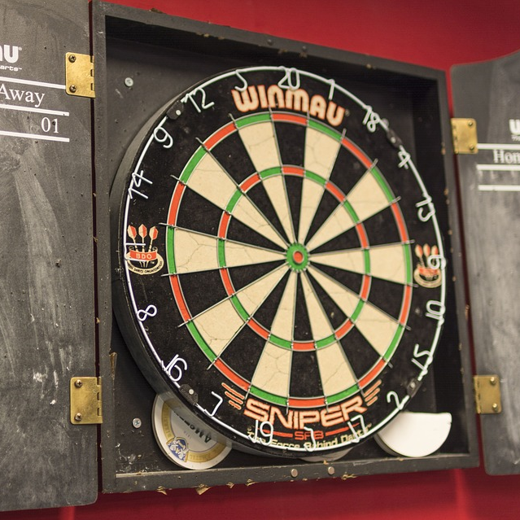
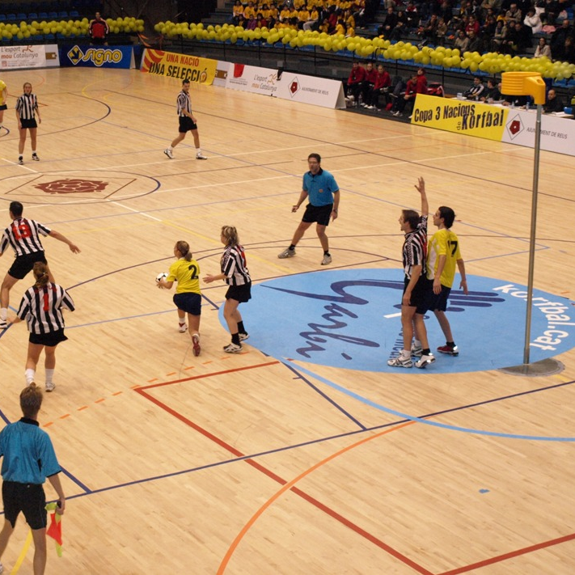
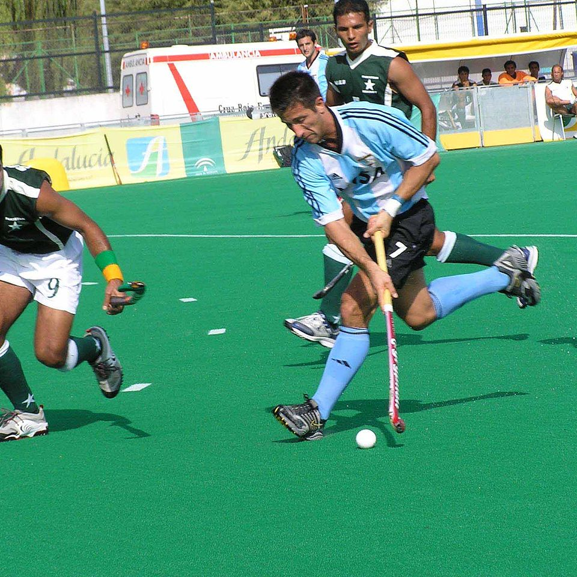
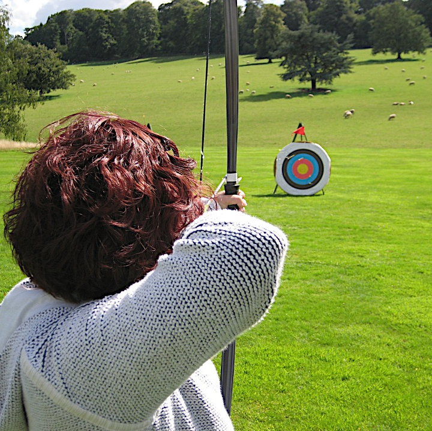
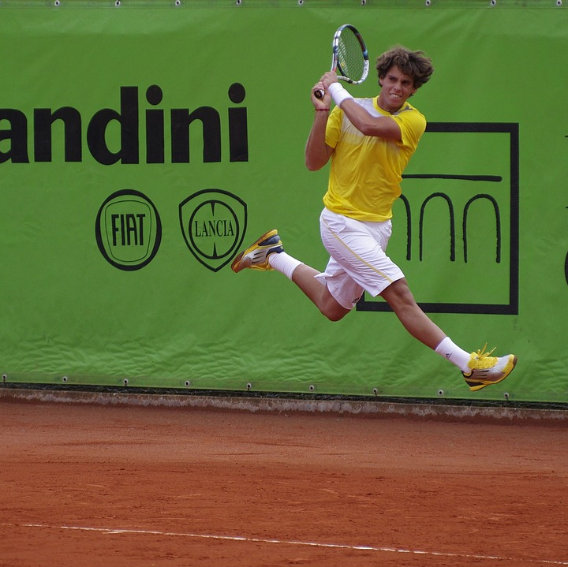
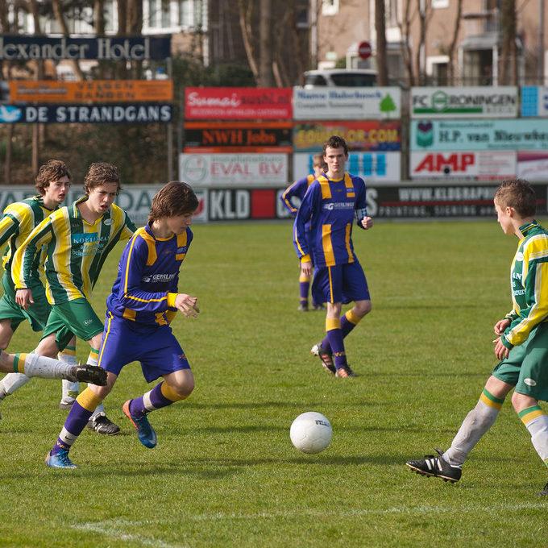
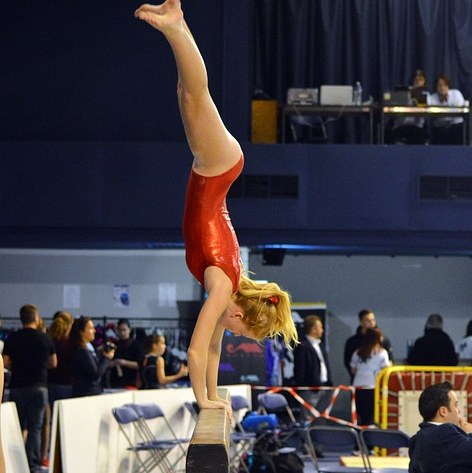

Informatie over Haarlem, de Zuiderpolder en Taekwondo in Haarlem
Haarlem
Haarlem is een mooie stad vlakbij de kust in Noord-Holland. In Haarlem zijn vele oude en monumentale panden te vinden, een voorbeeld hiervan is het station van Haarlem. Naast deze gebouwen zijn er ook bekende musea te vinden, zoals het Teylers museum en het Frans Hals museum. Daarnaast zijn er ook meer dan twintig hofjes te vinden in Haarlem, waaronder de oudste van Nederland: het Hofje van Bakenes uit 1395.
Behalve dat er bezienswaardigheden te vinden zijn in Haarlem, is de stad ook perfect om te shoppen. Zo is er bijvoorbeeld de Zijlstraat, in het eerste deel van de Zijlstraat vind je exclusieve winkels. In het tweede deel van de Zijlstraat zijn kleinere winkeltjes te vinden maar ook is er veel horeca te vinden in het tweede deel. Zo kan je tijdens het shoppen even op een terrasje een kop koffie drinken.
Kortom, Haarlem is een geweldig stad om een keer te bezoeken!
Zuiderpolder
De Zuiderpolder werd in de jaren '80 gebouwd als laatste grote uitbreiding van Haarlem. Oorspronkelijk hoorde de Zuiderpolder bij de Veerpolder maar in 1631 is het zuidelijke deel van de Veerpolder "afgesneden" en is dit deel de Zuiderpolder geworden.
De Zuiderpolder ligt ten Oosten van Haarlem centrum, de buurt ligt bij station Haarlem Spaarnwoude. De Zuiderpolder ligt in de wijk de Parkwijk. In deze wijk, en dus ook in de Zuiderpolder, zijn vooral eengezinswoningen en flats te vinden. Daarnaast is in de Parkwijk een groot park te vinden die een groen karakter geeft aan de wijk.
Sport
In de buurt van de Zuiderpolder zijn er verschillende sportclubs te vinden, hier een aantal voorbeelden:
Sportclub HLC

Bij deze sportclub kun je veel verschillende sporten volgen, denk aan turnen voor jongens en meisjes, maar er wordt ook poweryoga aangeboden en freerunning parkour.
Olympia Haarlem

Olympia Haarlem is een veelzijdige sportvereniging, ze bieden bijvoorbeeld voetbal, honkbal, softbal, badminton, darten, biljart en zelfs klaverjassen.
HKC Oosterkwartier

HKC Oosterkwartier is een korfbalvereniging sinds 1929, bij deze vereniging kun je korfballen voor jong en oud.
HMHC Saxenburg

Bij deze hockeyvereniging kun je altijd terecht, ongeacht je leeftijd. De teams worden namelijk op leeftijd ingedeeld om ervoor te zorgen dat het leeftijdsverschil minimaal blijft.
HBSV Brederode

HBSV Brederode is een boogschietvereniging in Haarlem. De sport wordt op verschillende manieren beoefend, zo zijn er traditionele houten bogen, recurve en compound.
Aikido Keihatsu
Bij deze sportclub wordt de sport Aikido beoefend, deze sport heeft als doen om de aanval van de tegenstander te neutraliseren zonder kracht uit te oefenen.
De Nieuwe Brug

De Nieuwe Brug is een tennis en sportcentrum, je kunt hier zowel dubbel als enkel tennis spelen voor heren en vrouwen. Ook is er de mogelijkheid om tennisbanen af te huren voor eigen gebruik.
HVV DSK

HVV DSK is een voetbalclub, deze voetbalclub heeft veel teams voor zowel jong en oud. Ook organiseert de club verschillende activiteiten.
Gymnastiekvereniging BATO

BATO is een gymnastiekvereniging die zich vooral richt op de jeugd. De vereniging doet ook mee aan verschillende wedstrijden.
Hwa-Rang Dragon
Hwa-Rang Dragon biedt zowel mudo, als taekwondo en jiu-jitsu. De vereniging heeft verschillende vestigingen.
Hwa-Rang Dragon
Hwa-Rang Dragon is een sportclub die zowel mudo, jiu-jitsu, maar ook taekwondo biedt. Taekwondo is een verdedigingssport omdat de sport zich vooral richt op zelfbeheersing en respect, maar ook het verbeteren van je persoonlijkheid is belangrijk bij taekwondo. Taekwondo kan vertaald worden als "De weg van vuist en voet", Tae betekent namelijk voet, kwon hand of vuist en do betekent de weg of de manier.